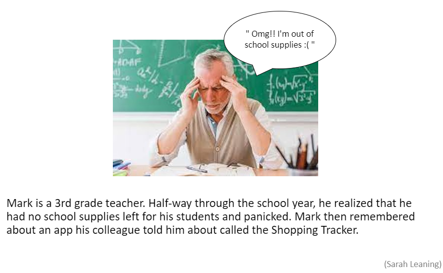
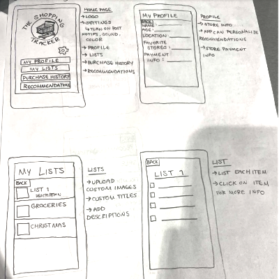
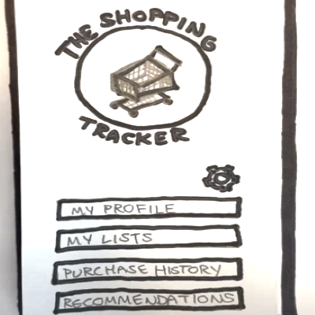
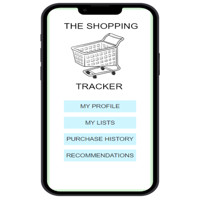

Problem Statement: Shopping Tracker

Many people have a shopping list that they use repeatedly. Our app helps users stay organized and watch their spending by tracking purchase history. The app can send out reminders on what to buy and the user can adjust how much they want to spend in a specific time period.
Affinity Diagram: Shopping Tracker

My group and I worked together to brainstorm things pertaining to our shopping tracker application. This includes who the app is made for, how the app will be styled, and the functions that it will have.
Personas: 5 Personas for Shopping Tracker App

Personas for typical shopping tracker app users that showcase who this app is useful for.
Storyboards: Shopping Tracker
Storyboards that present how the shopping tracker app helps users with their different problems and concerns.
Sketches: Shopping Tracker
Sketches that portray designs for user interface and how the shopping tracker app may look.
Paper Prototype: Shopping Tracker
Paper prototype that displays the features of the app and how it will be used by the user.
Hi-Fi Prototype: Shopping Tracker
A scenario with tasks and the outcome of usability of a high fidelity prototype.